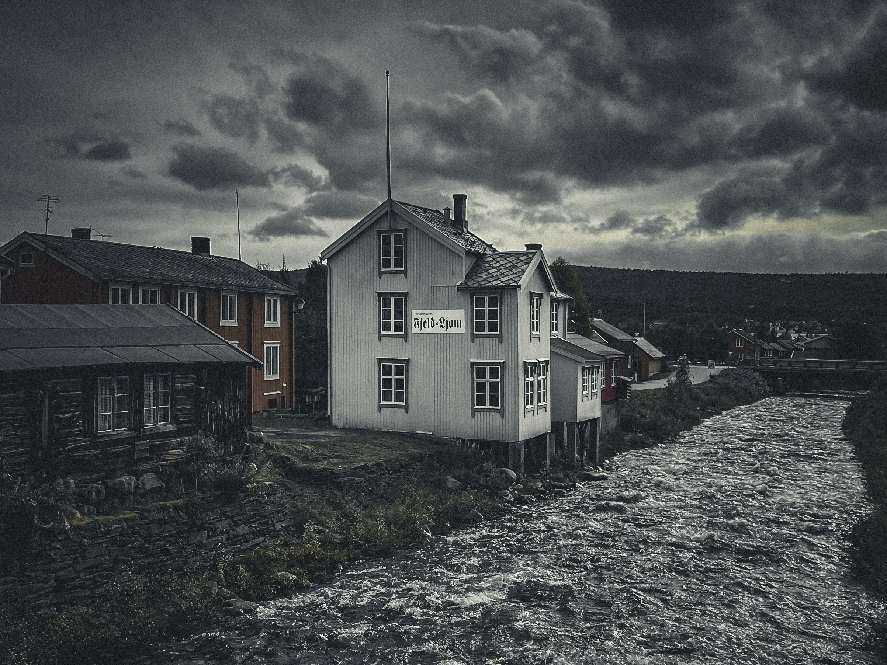

Kildeliste
- Berg, B. A. (16, 09 2024). Snl. Hentet fra Daniel_Mortenson: https://snl.no/Daniel_Mortenson
- Berg-Nordlie, M. (2022, November 8). snl. Hentet fra Sameneshistorie: https://snl.no/samenes_historie
- Mortenson, D. (1910, Januar 15). Waren sardne. ss. 1-4.
- Mortenson, D. (1910, November 12). Waren sardne. ss. 1-4.
- Mortenson, D. (1922, Oktober 20). Waren sardne. ss. 1-4.
- Mortenson, D. (1922, juli 20). Waren sarnde. ss. 1-4.
- Mortenson, D. (1927, Oktober). Waren sardne. ss. 1-4.
- Pressemuseet Fjeld-Ljom. (u.d.). Hentet fra Pressemuseet Fjeld-Ljom: https://fjeld-ljom.no
- Rorosmuseet. (u.d.). Rørosmuset.no. Hentet fra Rørossamisk: https://rorosmuseet.no/rorossamisk
- Røros bergstad og Circumferensen. (u.d.). kulturpunkt. Hentet fra 9. Waren Sardne: https://kulturpunkt.org/article/7598/
- Rørosmuseet. (u.d.). Rørosmuseet. Hentet fra Daniel Mortensson: https://rorosmuseet.no/daniel-mortensson
- Sametinget. (u.d.). Sametinget. Hentet fra sprak: https://sametinget.no/sprak/
- Skogvang, S. F. (2023, Desember 13). snl. Hentet fra fornorskingspolitikk: https://snl.no/fornorskingspolitikk
- Wikipedia. (16, 09 2024). Hentet fra Waren_Sardne: https://no.wikipedia.org/wiki/Waren_Sardne
- Halvorsen, J. S. (2000). Tekst og Tanke. ASCHEHOUG.
